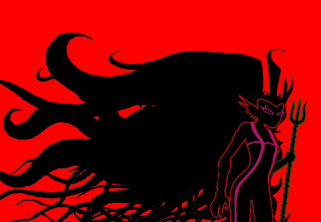
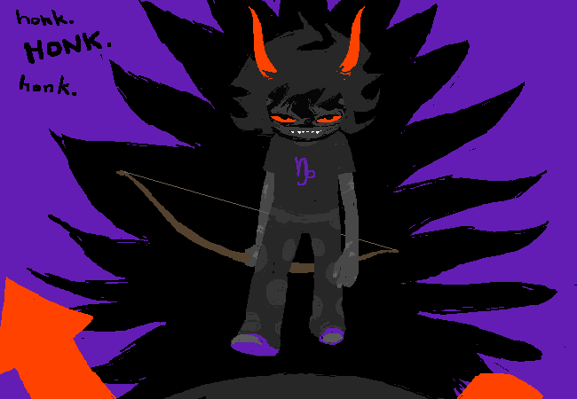
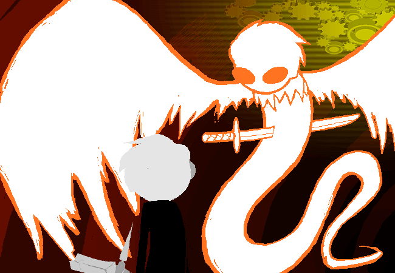
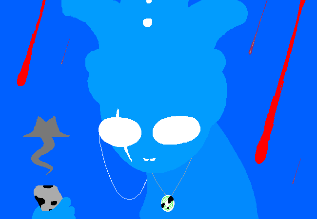
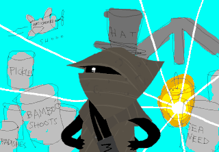
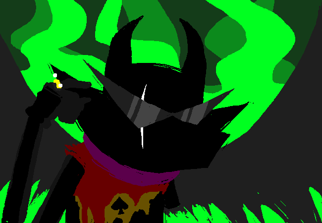

Sheet 3 has peoples
Mafia
Hammerman is…
Lord English
HOW DO YOU EXPECT TO OUTRUN ME
Mafia Godfather/1-Shot RampagerAlready here (Passive): You cannot be detected by any method available to puny mortals. You will appear as a vanilla townie to all town-aligned investigations. You cannot be killed through strifes or night attacks.
Indiscriminant Killing (Night): If you carry out the factional kill tonight, kill all other players that visit your target as well. 1 use.

Simon is…
)(er Imperious Condescension

yo i cant deal w this prissy hat chat no more
public works my ass what a waste of royal goldMafia Claimvig/1-shot Converter
2x3dent (Night): Quote one post from the main thread, and guess the role of the owner of the post or their defining abilities. If you are reasonably correct, you will attack them by throwing your 2x3dent at them.
Mind Powers (Day/Night): Once per game, you may guess a player to have the flavor below. You will control the player with the powers you have developed, and convert them to your faction.
oB_L1ght is…
Gamzee Makara

hOnK HoNk hOnK
Mafia Reanimator/Rampager
DoN’t TuRn YoUr BaCk On ThE bOdIeS (Night): Choose one dead player, and use one of their night actions. Their rolecard must be publically visible.
ENGAGE MURDER MODE (Night): If you carry out the factional kill tonight, kill all other players that visit your target as well. 1 use.
Centuries is…
Lil Cal
HEE HEE HOO HOO HEE HEE
HOO HOO HAA HEE HEE HOO
HOO HOO HEE HAA HEE HAA
HAA HAA HAA HAA HAA HAAMafia Roleblocker/Backup
Juju (Passive): As a Juju, you contain a fragment of Caliborn’s soul. Upon the death of Lord English, you will immediately replace them as the new Lord English.
A Fucking Puppet (Passive): Because you are but a fucking puppet, you have no power to strife anyone. This passive is lost after Juju activates.
Entangling limbs (Night): Use your entangling limbs to prevent a player from acting during this night phase.
You know that the following flavor and roles do not exist:
Jaspersprite
Jaspersprite
MrowTown Cat
Mrow (Night): As a cat/sprite, meow at night; you will prevent all visits to you from taking place.
Wincon: defeat all factions that pose a threat to you.
Jane
Jane Crocker
I began to wonder why I ever had the audacity to think I know much of anything about the world we live in or the journey we’re about to take.Town Retributionist
Maid of Life (Night): Once per game, choose one player that has died; bring them back to life.
Wincon: defeat all factions that pose a threat to you.
Roxy
Roxy Lalonde
i cant hit on anybody and appaprently i can entertain nary a frisky THOUGHT about anyboby because apparentley evrybodies OFF LIMITS!!!
Town Drunk
inebbriabrited (Passive): You have a 50% chance to fall asleep during the night, preventing you from carrying out any actions. You will know whether you are awake or not at the start of the night.
Rogue of Void (Night): With your void powers, you can summon objects from the void, but only once each per game:
- Pumpkin - what pumpkin?
- Cake - occupy a player from acting tonight.
- Rifle - kill a player.
- Glasses - investigate a player for their alignment.
Wincon: defeat all factions that pose a threat to you.
Jake
Jake English
Leave your bookish malarkey in a dusty old library somewhere. I have an adventure to get on with!
Town Beloved Sexy Man
Your ass is on TV! (Passive): Everyone loves you! You require one more vote to be executed. If you are tied for the most vote, the other person will be executed.
Hand guns (Night): Point fingerguns at a person, sexily. Your target will be too distracted to act tonight.Wincon: defeat all factions that pose a threat to you.
Town
Geyde
John Egbert

jeez…
i don’t know. i…
i don’t know if i’m ready for every single “deep” conversation we can squeeze into this wacky rapid fire session of fun pal-talk!
Town Ninja Doctor
God Tier (Passive): Achieving god tier status provides you with godlike power. By The first time you die in a strife, revive instantly. Your role will not be revealed during that time.
Heir of Breath (Passive): As the Heir of Breath, you are literally made of the wind. Your visits as night cannot be detected.
Doctor (Night): With the power to heal Skaia, you can heal others as well. Target one person; if they would die, prevent it.
Appelsiini
Jade Harley

there is still something worth fighting for!
Town 3-Shot Swapper/Lookout
Power of the green sun (Passive): Merging your first guardian dog Becquerel provides you with a variety of powers:
-
Dog Tier (Passive): Achieving god tier status provides you with godlike power. You’re even stronger with the power of Bec! The first time you die, revive instantly. Your role will not be revealed during that time.
-
Interdimensional powers (Passive): You may target people in either thread for your abilities.
-
Witch of Space (Night): With Space Powers, you can swap around physical locations of people. Target as many people as you want; redirect actions from one of your targets to another as you choose. 3 uses.
-
Omnipotence (Night): Although First Guardian powers grant near omnipotence, there are some dark pockets in your knowledge. Target one person; see who they are visited by tonight. Infinite uses.
-
Woof!! (Day): You are part dog; as such, you will uncontrollably bark from time to time. Once a day, while you are active in the game, the host will notify you to post the dog emoji (
 ) in the main thread. You must comply within 1 hour, or you will be yelled at in this thread every hour you do not do so.
) in the main thread. You must comply within 1 hour, or you will be yelled at in this thread every hour you do not do so.
Mist1422
Davesprite

caw caw motherfuckers
Town 3-Shot PGO
Caw Caw Motherfuckers (Night): Swing your shitty anime sword around tonight. You will kill all players that visit you, regardless of any abilities your visitors may have.
Wazza
Nannasprite

Hoo hoo hoo!
Fruit Vendor/Roleblocker/Poisoner
Bake cake (Night) - Bake a cake, and give it to a player. This action is compulsive.
Prankster’s Gambit (Night) - Yeet the cake to the player instead, preventing them from acting tonight out of shame. Hoo hoo!
Purposely Bad Baking (Night) - Put a little bit of poison in your cake - your target will die at the end of the next day phase.
PKR
Casey
TAKE US THERE CASEY
Town Self Protector
Sweet, sweet Casey (Passive) - You’re just a simple salamander - there’s no way you’d ever be able to fight anyone! You cannot strife anyone.
Blub (Day/Night) - Blub loudly, creating a large bubble out of your mouth. The glorious bubble will protect you from attackers for the next cycle. 2 uses.
Ash4Fun
Rose Lalonde

Consider this your first lesson in showmanship.
Town Lover Lynchcop
God Tier (Passive): Achieving god tier status provides you with godlike power. By The first time you die in a strife, revive instantly. Your role will not be revealed during that time.
Lilith in Starlight (Passive): You are passionately in love with another player. As such, you know that [TBD] has the same alignment as you.
Seer of Light (Day): As the seer of light, you can see the optimal course of action that will lead you to victory. Once each day, you can ask the hosts to reveal to you how many people within the top 3 wagons oppose your faction; however, you will not learn which result is from which player. 3 uses.
Leafia
Dave Strider
beep beep albino hairless dickmonkey coming through
Town Chronomancer
God Tier (Passive): Achieving god tier status provides you with godlike power. By The first time you die in a strife, revive instantly. Your role will not be revealed during that time.
Dead Daves are the enemy (Day): If you are attacked during the upcoming night phase, delay the kill for 2 nights. This attack can be healed during this time. 2 uses.
Time Loop Shenanigans (Night): Target one other player. Use time travel shennanigans to delay any attacks on them for two nights. This attack can be healed during this time. Infinite uses.
Close Time Loops (Night): Redirect all delayed deaths that you have to a targeted player. Infinite uses.
Modeshifter
Karkat Vantas

MY HATE IS THE LIFEBLOOD THAT PULSES THROUGH THE VEINS OF YOUR UNIVERSE. IT IS MY GIFT TO YOU. YOU’RE WELCOME FOR THAT. YOU UNGRATEFUL PIECE OF SHIT.
Town Hidden Triplevoter
Romance Expert (Passive): You consider yourself an expert in Troll Romance. As such, it is your goal to prevent any cases of TROLL/HUMAN SLOPPY MAKEOUTS. As long as you are present in the game, every attempt in the first event will fail.
Leader Complex (Day): No matter the circumstance, you HAVE TO KNOW WHO THE LEADER IS. Your vote will silently count as 3 votes today. 3 uses.
An_gorta_pratai
Wayward Vagabond

i don’t like the gray text knight. it is an unpleasant human
Innocent Child, no ITA
The MayoR! (Passive): Declare yourself as the mayor of CAN TOWN!!! You would be loved by EVERYONE!!!
Civil Duties (Passive): The Citizens of CAN TOWN call for you to fulfill your civic duties! Under NO CIRCUMSTANCE should you use violence! As such, you cannot strife against another player.
mathmods
Terezi Pyrope

W3 M4K3 OUR OWN LUCK
4ND YOU’R3 4BOUT TO PROV3 TH4T
Town Rolecop
BL1ND 1NV3ST1G4T1ON (Passive): You’re blind -your actions have a 50% chance to target someone that is not your target.
L3G1SL4C3RAT1ON (Night): Interrogate one person tonight. Their role will be revealed to you.
KyoDaz
Vriska Serket

And you don’t have to 8e a good person to 8e a hero.
Town Vigilante/Redirector/Miller
God Tier (Passive): Achieving god tier status provides you with godlike power. By The first time you die in a strife, revive instantly. Your role will not be revealed during that time.
All the Irons in the Fire (Passive): You have soooooooo many irons in the fire. In fact, some might say that you have aaaaaaaallllllll the irons in the fire. Because of this, many mistakenly see you to be evil. You will appear as a member of the anti-town with no abilities to all checks.
No remorse (Day/Night): Just fucking kill someone you don’t like. Usable once per one Day/Night Cycle.
Mindfang (Night): The trolls of your blood has access to special mind powers. Target one person; force them to act on your second target if they can.
fourfourfourfour
Kanaya Maryam
Fussyfangs.
Town Bleeder
Lilith in Starlight (Passive): You are passionately in love with another player. As such, you know that [TBD] has the same alignment as you.
Rainbow Drinker (Day/Night): Once per Day/Night Cycle, target one player; suck their blood, causing them to die in in 2 cycles (e.x. D2 bleed -> start of D4 death).
Noots
Zone
Jack Noir

Graveyard stuffers.
Neutral Serial Killer, 2-Shot Rampager
Bad Dog, Worst Enemy (Passive): The power of the Green Sun provides you with power you should not wield. You cannot be killed with methods other than public execution.
Stabby Stab (Night): Use your sword to fucking stab someone to death. God you love sharp things.
Red Miles (Night): Unleash the power of the Queen’s Ring to kill target player and everyone else who visits them.
Wincon: Be the last player remaining.
Apprentice
Peregrine Mendicant
Liberty. Reason. Justice. Civility. Edification. Perfection.

Neutral Executioner
MAIL. (Passive): You must enact justice on the wicked. You know that the following role exists:
Jack Noir
Jack Noir
Graveyard stuffers.
Neutral Serial Killer, 2-Shot Rampager
Bad Dog, Worst Enemy (Passive): The power of the Green Sun provides you with power you should not wield. You cannot be killed with methods other than public execution.
Stabby Stab (Night): Use your sword to fucking stab someone to death. God you love sharp things.
Red Miles (Night): Unleash the power of the Queen’s Ring to kill target player and everyone else who visits them.
Wincon: Be the last player remaining.
You will win if the player is publically executed. If you are alive when they are executed, you will win the game; you may choose to continue playing, aligned with the uninformed majority with no abilities.
Ring of the White Queen (Passive): The power of the Green Sun provides you with power that you can put to justice. You cannot be killed with methods other than public execution.
Wincon: put the slayer to death.
Fakeclaims
Jaspersprite
Jaspersprite
MrowTown Cat
Mrow (Night): As a cat/sprite, meow at night; you will prevent all visits to you from taking place.
Wincon: defeat all factions that pose a threat to you.
Jane
Jane Crocker
I began to wonder why I ever had the audacity to think I know much of anything about the world we live in or the journey we’re about to take.Town Retributionist
Maid of Life (Night): Once per game, choose one player that has died; bring them back to life.
Wincon: defeat all factions that pose a threat to you.
Roxy
Roxy Lalonde
i cant hit on anybody and appaprently i can entertain nary a frisky THOUGHT about anyboby because apparentley evrybodies OFF LIMITS!!!
Town Drunkinebbriabrited (Passive): You have a 50% chance to fall asleep during the night, preventing you from carrying out any actions. You will know whether you are awake or not at the start of the night.
Rogue of Void (Night): With your void powers, you can summon objects from the void, but only once each per game:
- Pumpkin - what pumpkin?
- Cake - occupy a player from acting tonight.
- Rifle - kill a player.
- Glasses - investigate a player for their alignment.
Wincon: defeat all factions that pose a threat to you.
Jake
Jake English
Leave your bookish malarkey in a dusty old library somewhere. I have an adventure to get on with!
Town Beloved Sexy Man
Your ass is on TV! (Passive): Everyone loves you! You require one more vote to be executed. If you are tied for the most vote, the other person will be executed.
Hand guns (Night): Point fingerguns at a person, sexily. Your target will be too distracted to act tonight.Wincon: defeat all factions that pose a threat to you.
Zone’s fakeclaim:
Calliope
Calliope
by skaias gUiding light, yoU may leave behind its tUrning arms of bright coloUrs and mayhem, and secUre peace for yoUr cosmic progeny for all dUration.Town Empowerer
Cherub (Passive): As a Cherub, you share a body with your brother, chained one leg to the wall, constantly fighting to gain superiority. You may only target people 2 slots above and below you on the rolelist for your abilities.
Trickster Mode!! (Night): Grant another player with your Juju, granting them Trickster Mode!! Their abilities cannot be redirected, stopped, or reversed. 3 uses.
Wincon: defeat all factions that pose a threat to you.


{kind=link}